2.5 アルゴリズム2 線形モデル
2.5.1 線形モデルによる回帰
線形モデルによる予測式は…
\[\hat{y} = w[0]\times x[0] + w[1]\times x[1] + ... + w[p]\times x[p] + b\]
- \(\hat{y}\)は予測値で、\(w\)と\(b\)はモデルのパラメータ。\(x\)はある一つのデータポイントの特徴量。
- 予測値は、データポイントを適当に重み付けしたもの、と見ることもできる。
waveに線形回帰を適用してプロットしてみよう。
mglearn.plots.plot_linear_regression_wave()
## w[0]: 0.393906 b: -0.031804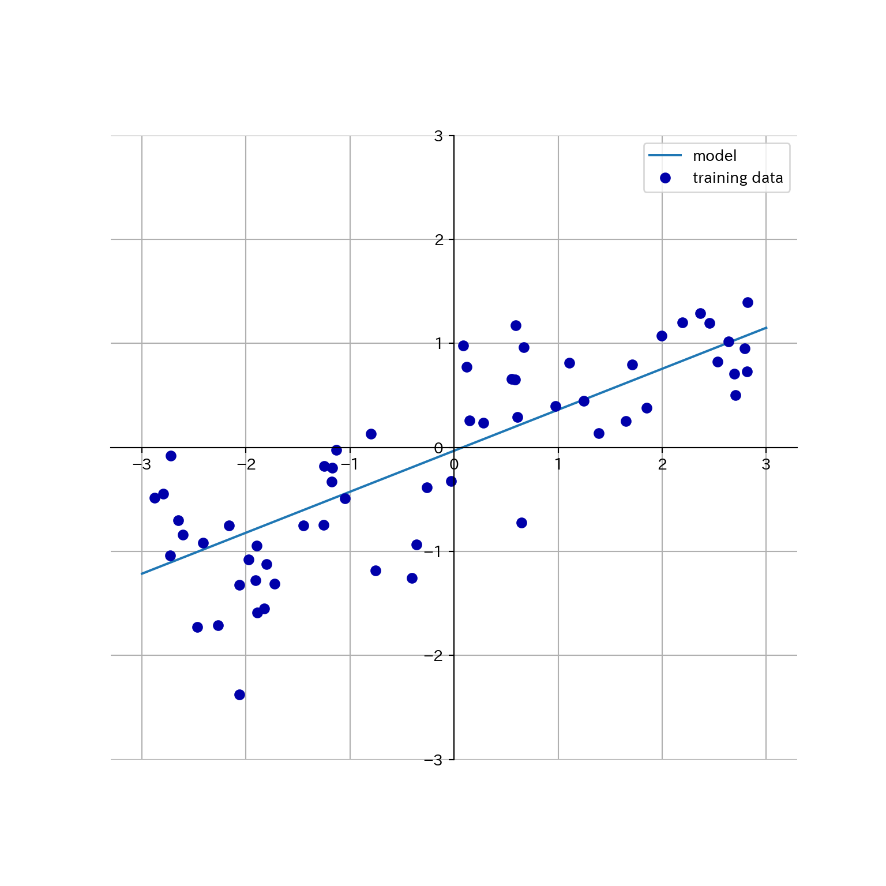
線形モデルを利用した回帰にはいろいろなアルゴリズムがあって、それぞれ以下の点で異なっている。
- どのようにパラメータ\(w\)と\(b\)を学習するか。
- モデルの複雑さをどのように制御するのか。
2.5.2 線形回帰(通常最小二乗法)
- 予測値と真値の平均二乗誤差 (mean squared error) を最小にするようなパラメータを求める。
- 線形回帰には複雑さを制御するパラメータがない。できない。
from sklearn.model_selection import train_test_split
from sklearn.linear_model import LinearRegression
X, y = mglearn.datasets.make_wave(n_samples = 60)
X_train, X_test, y_train, y_test = train_test_split(X, y, random_state = 42)
lr = LinearRegression().fit(X_train, y_train)- \(w\)は係数 (coefficient)と呼ばれ、
coef_に格納される。 - \(b\)は切片 (intercept)と呼ばれ、
intercept_に格納される。
print(lr.coef_)
## [0.39390555]
print(lr.intercept_)
## -0.03180434302675973- 訓練データから得られた属性にアンダースコアを付けるのはscikit-learnの慣習である。
coef_は特徴量1つに対して1つの値をもつNumPy配列となる。- 線形回帰の性能は決定係数\(R^2\)として求められる。
print(lr.score(X_train, y_train))
## 0.6700890315075756
print(lr.score(X_test, y_test))
## 0.6593368596863701ここで訓練セットとテストセットの\(R^2\)があんまり違わないのは（予測性能はともかく）過剰適合していないことを示している。通常、特徴量が多いほど過剰適合のリスクが高まる。拡張したboston_housingで確認してみよう。
X, y = mglearn.datasets.load_extended_boston()
X_train, X_test, y_train, y_test = train_test_split(X, y, random_state = 0)
lr = LinearRegression().fit(X_train, y_train)\(R^2\)を訓練セットとテストセットで比較してみよう。
print(lr.score(X_train, y_train))
## 0.9523526436864239
print(lr.score(X_test, y_test))
## 0.6057754892935757両者に乖離が見られるのは、過剰適合している可能性がある。
モデルの複雑さを制御できれば良いのだが、線形回帰にはそのためのパラメータがない。パラメータを導入する方法としてリッジ回帰がある。
2.5.3 リッジ回帰
- 係数が多いからモデルが複雑になる。
- 係数が0＝その係数を考慮しない。
- 係数が小さければモデルは単純になるのでは🤔
- 極端な話係数が全部ゼロなら入力に関わらず一定の値(平均とか)を出力するモデルになる。
- 係数ベクトルの長さを最小化しよう！→リッジ回帰
from sklearn.linear_model import Ridge
ridge = Ridge().fit(X_train, y_train) # データは拡張Boston housingのまま
print(ridge.score(X_train, y_train))
## 0.8860578560395836
print(ridge.score(X_test, y_test))
## 0.7527139600306947- 訓練セットへの予測能力が下がったけどテストセットへの予測能力が上がった！
- モデルを単純にすることで汎化能力が上がっている。
- リッジ回帰におけるモデルの単純さを制御するパラメータ: \(\alpha\)
- 大きいほど制約が強い = モデルが単純になる
- sklearnのデフォルトは1.0
- 何が良いかはデータ次第で、自動的には調整されない（後で多分チューニング方法が出て来る）。
### alphaを10倍にしてみる パラメータはオブジェクト生成時に指定
ridge10 = Ridge(alpha = 10).fit(X_train, y_train)
print(ridge10.score(X_train, y_train))
## 0.7883461511233252
print(ridge10.score(X_test, y_test))
### alphaを0.1倍にしてみる パラメータはオブジェクト生成時に指定
## 0.6358967327447733
ridge01 = Ridge(alpha = .1).fit(X_train, y_train)
print(ridge01.score(X_train, y_train))
## 0.9285782082010734
print(ridge01.score(X_test, y_test))
## 0.7717933688844941\(\alpha\)の大きさと係数の関係をプロットしてみる。\(\alpha\)が大きいほど係数の絶対値は小さくなるはず…
plt.plot(ridge.coef_, 's', label="Ridge alpha=1")
plt.plot(ridge10.coef_, '^', label="Ridge alpha=10")
plt.plot(ridge01.coef_, 'v', label="Ridge alpha=0.1")
plt.plot(lr.coef_, 'o', label="LinearRegression")
plt.xlabel("係数のインデックス")
plt.ylabel("係数の値")
plt.hlines(0, 0, len(lr.coef_))
plt.ylim(-25, 25)
plt.legend()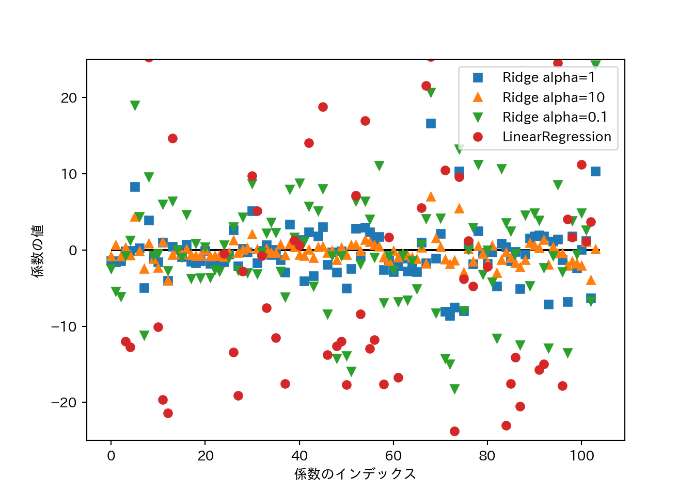
- データサイズを増やしていくとスコアはどのように変化するか？
- 学習曲線 (learning curve): モデルの性能をデータセットサイズとの関係で表したもの。
- リッジ回帰は正則化の影響で常に線形回帰より訓練データへの適合が低い。
- テストセットへの適合はデータセットサイズが小さいうちはリッジ回帰の方が優れる。
- データセットサイズが大きくなると、リッジ回帰と線形回帰の差はなくなる。
- データセットサイズが大きくなると、(単純なモデルでは)過剰適合することが難しくなる。
mglearn.plots.plot_ridge_n_samples()
plt.xlabel("訓練セットのサイズ")
plt.ylabel("スコア(R²)")
plt.legend(labels=["リッジ 訓練セット", "リッジ テストセット", "線形回帰 訓練セット", "線形回帰 テストセット"])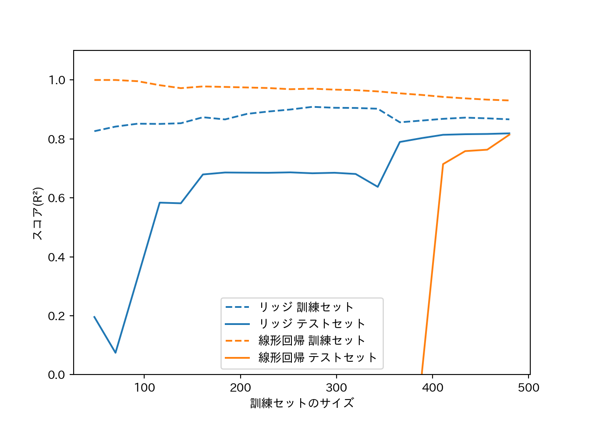
2.5.4 Lasso
- Ridgeとは異なる形で係数に制約をかける線形回帰。
- L1正則化: L1ノルム、つまり係数の絶対値の和に制約をかける。
- いくつかの係数が完全に0になる場合があるという点がRidgeと大きく異なる。
- 係数が完全に0=係数を除外しているということなので、自動的な変数選択ともみなせる。
- 変数が減ればモデルを解釈しやすくなるという利点もある。
Lassoをboston_housingに適用する。
from sklearn.linear_model import Lasso
lasso = Lasso().fit(X_train, y_train)
print("訓練データスコア: {:.2f}".format(lasso.score(X_train, y_train)))
## 訓練データスコア: 0.29
print("テストデータスコア: {:.2f}".format(lasso.score(X_test, y_test)))
## テストデータスコア: 0.21
print("選択された特徴量数: {}".format(np.sum(lasso.coef_ != 0)))
## 選択された特徴量数: 4- スコアが非常に悪いのは、パラメータを全くチューニングしていないことによる。
- Lassoには複雑さの度合いを制御するパラメータ
alphaがある。alphaのデフォルトは1.0で、小さくするほど複雑なモデルになる。 alphaを手動で減らす際には、合わせてmax_iterを増やしてやる必要がある。
lasso001 = Lasso(alpha = 0.01, max_iter=100000).fit(X_train, y_train)
print("訓練データスコア: {:.2f}".format(lasso001.score(X_train, y_train)))
## 訓練データスコア: 0.90
print("テストデータスコア: {:.2f}".format(lasso001.score(X_test, y_test)))
## テストデータスコア: 0.77
print("選択された特徴量数: {}".format(np.sum(lasso001.coef_ != 0)))
## 選択された特徴量数: 33alphaを小さくしすぎると過剰適合する。
lasso00001 = Lasso(alpha = 0.0001, max_iter=100000).fit(X_train, y_train)
print("訓練データスコア: {:.2f}".format(lasso00001.score(X_train, y_train)))
## 訓練データスコア: 0.95
print("テストデータスコア: {:.2f}".format(lasso00001.score(X_test, y_test)))
## テストデータスコア: 0.64
print("選択された特徴量数: {}".format(np.sum(lasso00001.coef_ != 0)))
## 選択された特徴量数: 94Ridgeでやったように係数の大きさをプロットしてみよう。
plt.plot(lasso.coef_, 's', label = "Lasso alpha = 1")
plt.plot(lasso001.coef_, '^', label = "Lasso alpha = 0.01")
plt.plot(lasso00001.coef_, 'v', label = "Lasso alpha = 0.0001")
plt.plot(ridge01.coef_, 'o', label = "Ridge alpha = 0.1")
plt.legend(ncol = 2, loc = (0, 1.05))
plt.ylim = (-25, 25)
plt.xlabel("係数のインデックス")
plt.ylabel("係数の大きさ")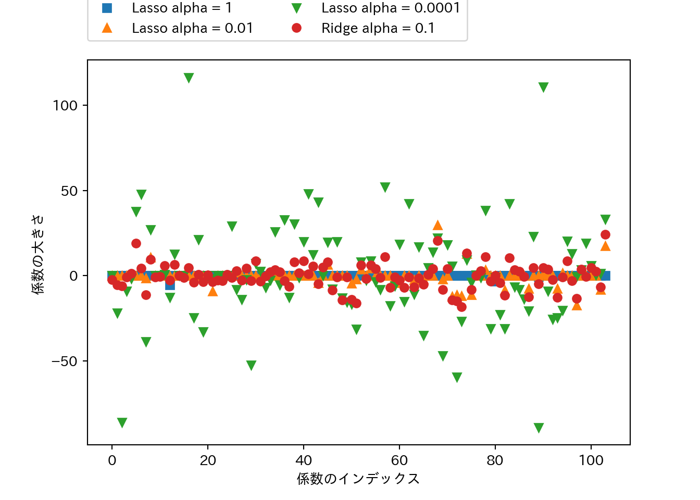
- 合わせてプロットしたRidge(\(\alpha=0.1\))は、Lasso(\(\alpha=0.01\))と同じくらいの性能であるが、Ridgeでは大きさが小さいながらも係数の値は0にはなっていないものが多いのに対して、Lassoでは大きさが0の係数が目立つ。
- 実際にはまずRidgeを試すと良い。
- 係数がたくさんあって重要なのはそのうちの幾つか少数であると予想されるのであれば、Lassoを試すと良い。
- RidgeとLassoのペナルティを組合せたものとしてElasticNetがある。結果は良好であるが、チューニングすべきパラメータが増えるという欠点がある。
2.5.5 クラス分類のための線形モデル
線形モデルでクラス分類を行う場合は以下の式を用いる。
\[\hat{y} = w[0]\times x[0] + w[1]\times x[1] + \dots + w[p]\times x[p] + b > 0\]
- 出力\(y\)が0を超えるかどうかで判別する。
- 出力\(y\)は特徴量の線形関数であり、2つのクラスを直線や平面、超平面で分割する決定境界となる。
- 線形モデルを学習するアルゴリズムは以下の観点から分類される。
- どのような尺度で訓練データへの適合度を測るか。
- 正則化を行うか。行うならどのような方法か。
- ロジスティック回帰と線形サポートベクターマシンは一般的な線形クラスアルゴリズムである。
LogisticRegressionとLinearSVCによりforgeを分類する決定境界を可視化する。
from sklearn.linear_model import LogisticRegression
from sklearn.svm import LinearSVC
X, y = mglearn.datasets.make_forge()
fig, axes = plt.subplots(1, 2, figsize = (10, 3))
for model, ax in zip([LinearSVC(), LogisticRegression()], axes):
clf = model.fit(X, y)
mglearn.plots.plot_2d_separator(clf, X, fill = False, eps = 0.5, ax = ax, alpha = 0.7)
mglearn.discrete_scatter(X[:, 0], X[:, 1], y, ax = ax)
ax.set_title("{}".format(clf.__class__.__name__))
ax.set_xlabel("特徴量 0")
ax.set_ylabel("特徴量 1")
axes[0].legend()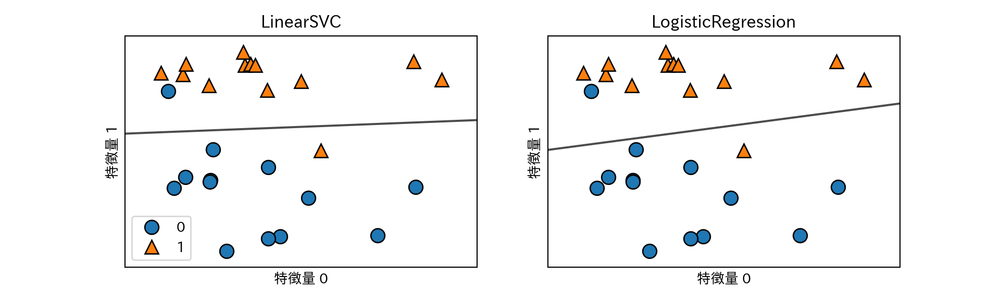
- 2つのクラス分類器はいずれも正則化パラメータCを持つ。Cは大きいほど正則化が弱くなる。
- Cがは小さいとデータポイントの多数派に適合しようとするが、大きくすると個々のデータポイントを正確に分類しようとする。
mglearn.plots.plot_linear_svc_regularization()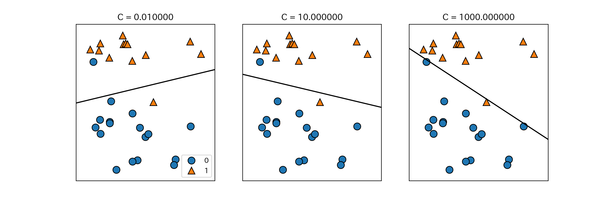
- 上記の例では、Cを大きくすると誤分類した少数の点に決定境界が大きく影響されていることがわかる。
- 低次元の場合は線形分類は制約が強いように思えるが、次元数が大きくなるとモデルは強力になり、むしろ過剰適合をいかに避けるかがポイントになる。
cancerにLogisticRegressionを適用してみる。
from sklearn.datasets import load_breast_cancer
cancer = load_breast_cancer()
X_train, X_test, y_train, y_test = train_test_split(
cancer.data, cancer.target, stratify = cancer.target, random_state = 42
)
logreg = LogisticRegression().fit(X_train, y_train)
print("テストセットスコア: {:.3f}".format(logreg.score(X_train, y_train)))
## テストセットスコア: 0.953
print("訓練セットスコア: {:.3f}".format(logreg.score(X_test, y_test)))
## 訓練セットスコア: 0.958- 訓練セットとテストセットのスコアが近い場合は適合不足を疑う。
パラメータCを大きくしてモデルの複雑さを上げる。
logreg100 = LogisticRegression(C=100).fit(X_train, y_train)
print("テストセットスコア: {:.3f}".format(logreg100.score(X_train, y_train)))
## テストセットスコア: 0.967
print("訓練セットスコア: {:.3f}".format(logreg100.score(X_test, y_test)))
## 訓練セットスコア: 0.965精度が上がった。今度は逆にパラメータCを小さくしてみる。
logreg001 = LogisticRegression(C=0.01).fit(X_train, y_train)
print("テストセットスコア: {:.3f}".format(logreg001.score(X_train, y_train)))
## テストセットスコア: 0.934
print("訓練セットスコア: {:.3f}".format(logreg001.score(X_test, y_test)))
## 訓練セットスコア: 0.930精度が下がった。最後に、3つのパターンについて係数を可視化してみる。
plt.plot(logreg.coef_.T, 'o', label = "C=1")
plt.plot(logreg100.coef_.T, '^', label = "C=100")
plt.plot(logreg001.coef_.T, 'v', label = "C=0.01")
plt.xticks(range(cancer.data.shape[1]), cancer.feature_names, rotation=90)
plt.hlines(0, 0, cancer.data.shape[1])
plt.xlabel("特徴量")
plt.ylabel("係数の大きさ")
plt.legend()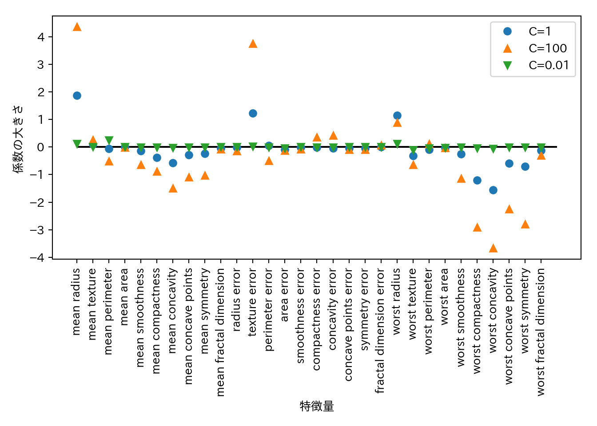
- デフォルトではLogisticRegressionはL2正則化を行う。
penalty="l1"の指定でL1正則化に切り替えることができる。より単純なモデルが欲しければこちらを試すと良い。
for C, marker in zip([0.001, 1, 100], ['o', '^', 'v']):
lr_l1 = LogisticRegression(C = C, penalty = "l1").fit(X_train, y_train)
print("訓練セットに対する精度(C={:.3f}): {:.2f}".format(C, lr_l1.score(X_train, y_train)))
print("テストセットに対する精度(C={:.3f}): {:.2f}".format(C, lr_l1.score(X_test, y_test)))
plt.plot(lr_l1.coef_.T, marker, label = "C={:.3f}".format(C))
## 訓練セットに対する精度(C=0.001): 0.91
## テストセットに対する精度(C=0.001): 0.92
## 訓練セットに対する精度(C=1.000): 0.96
## テストセットに対する精度(C=1.000): 0.96
## 訓練セットに対する精度(C=100.000): 0.99
## テストセットに対する精度(C=100.000): 0.98
plt.xticks(range(cancer.data.shape[1]), cancer.feature_names, rotation = 90)
plt.hlines(0, 0, cancer.data.shape[1])
plt.xlabel("特徴量")
plt.ylabel("係数の大きさ")
plt.legend(loc = 3)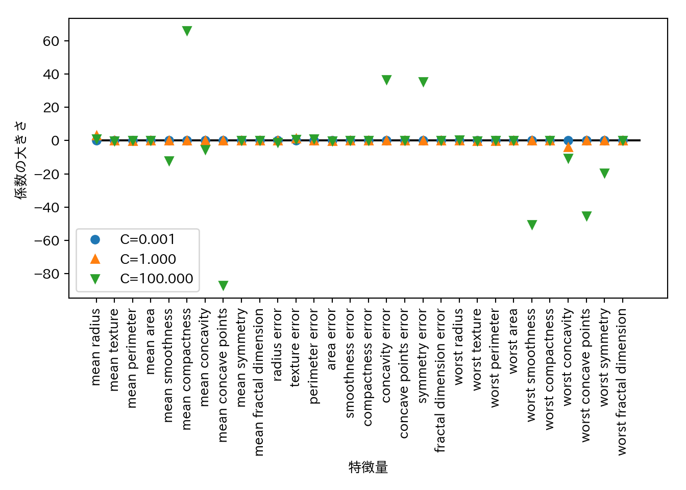
2.5.6 線形モデルによる多クラス分類
- 大抵の線形クラス分類は2クラス分類にしか対応しておらず、そのままでは多クラスに拡張することはできない。
- ロジスティック回帰は例外
- 拡張するための方法として1対その他(one-vs.-rest)アプローチがある。
- 1つのクラスとその他のクラスという2クラス分類に対してモデルを学習させる。
- データポイントに対しては全ての2クラス分類を実行する。
- 一番高いスコアのクラス分類器の分類結果を予測結果とする。
- クラスごとに2クラス分類が存在するということなので、クラスごとに以下の式で表す確信度が存在し、確信度が最も大きいクラスがクラスラベルとなる。
\[ w[0] \times x[0] + w[1] \times x[1] + \dots + w[p] \times x[p] + b\]
- 多クラスロジスティック回帰と1対多アプローチは多少異なるが、1クラスあたり係数ベクトルと切片ができるという点は共通している。
3クラス分類に対して1対多アプローチを試す。データはガウス分布からサンプリングした2次元データセットとする。
from sklearn.datasets import make_blobs
X, y = make_blobs(random_state = 42)
mglearn.discrete_scatter(X[:, 0], X[:, 1], y)
plt.xlabel("特徴量0")
plt.ylabel("特徴量1")
plt.legend(["クラス0", "クラス1", "クラス2"])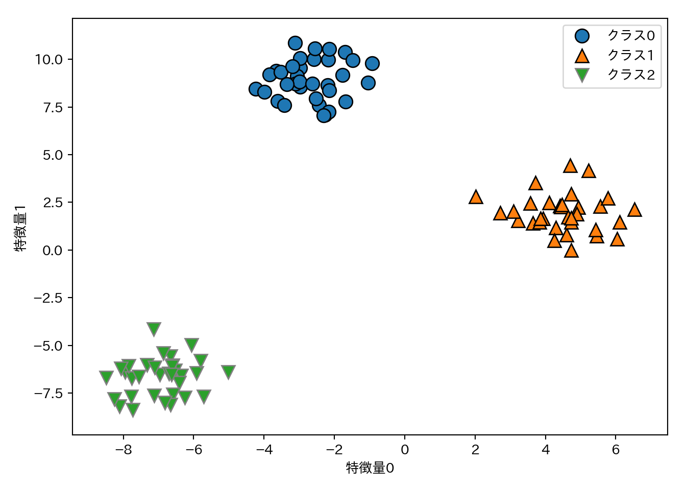
このデータセットでLinearSVCを学習させる。
linear_svm = LinearSVC().fit(X, y)
print("係数ベクトルの形状", linear_svm.coef_.shape)
## 係数ベクトルの形状 (3, 2)
print("切片ベクトルの形状", linear_svm.intercept_.shape)
## 切片ベクトルの形状 (3,)- 係数ベクトルの形状が3行2列ということは、各行に各クラスに対応する2次元の係数ベクトルが格納されているということである。
- 切片ベクトルはクラスの数に対応している。
- 上記2点をまとめると、3つのクラス分類器が得られているということである。
3つのクラス分類器が作る決定境界を可視化する。
mglearn.discrete_scatter(X[:, 0], X[:, 1], y)
line = np.linspace(-15, 15)
for coef, intercept, color in zip(linear_svm.coef_, linear_svm.intercept_, ['b', 'r', 'g']):
plt.plot(line, -(line * coef[0] + intercept) / coef[1], c = color)
plt.xlabel("特徴量0")
plt.ylabel("特徴量1")
plt.legend(['クラス0', 'クラス1', 'クラス2', 'クラス0の決定境界', 'クラス1の決定境界', 'クラス2の決定境界'],
loc = (1.01, 0.3))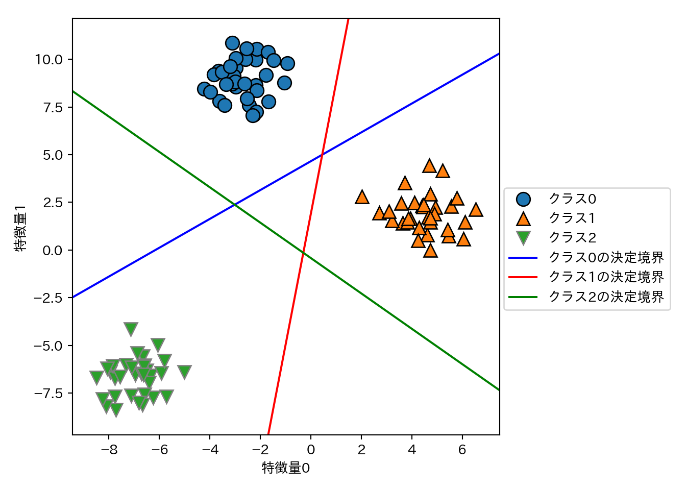
- 決定境界が作る領域の中には複数のクラスが属する部分(左、右上、右下の三角形領域)と、すべてのクラスが属さない部分(中央の三角)がある。この内部では、クラス分類式の値が一番大きいクラスが予測されるクラスとなる。
- 例えば、中央の三角であれば対応する決定境界が最も近いクラスに分類される。
上記のルールに従って、多クラス分類における最終的な決定境界を示す。
mglearn.plots.plot_2d_classification(linear_svm, X, fill = True, alpha = .7)
mglearn.discrete_scatter(X[:, 0], X[:, 1], y)
line = np.linspace(-15, 15)
for coef, intercept, color in zip(linear_svm.coef_, linear_svm.intercept_, ['b', 'r', 'g']):
plt.plot(line, -(line * coef[0] + intercept) / coef[1], c = color)
plt.legend(["クラス0", "クラス1", "クラス2", "クラス0の決定境界", "クラス1の決定境界", "クラス2の決定境界"],
loc = (1.01, 0.3))
plt.xlabel("特徴量0")
plt.ylabel("特徴量1")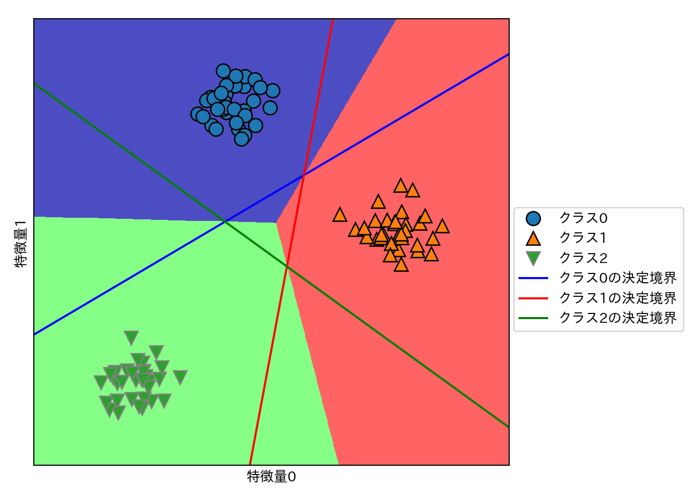
2.5.7 利点、欠点、パラメータ
- 線形モデルの主要なパラメータ
- 回帰モデル: alpha
- 大きいと単純なモデル
- LinearSVCとLogisticRegression: C
- 小さいと単純なモデル
- 回帰モデル: alpha
- alpha、Cは対数スケールで調整する。
- 正則化を行う場合はL1かL2かも重要なポイント。
- 一部のパラメータが重要と予想される: L1
- パラメータを限定できるので、モデルを説明しやすくなる。
- 特にそのようなこだわりがない: L2
- 一部のパラメータが重要と予想される: L1
- 線形モデルの利点
- 訓練、予測ともに高速。
- 大きなデータセットでも疎なデータセットでも上手く動く。
- 非常に大きなデータセットへの対処は2通りある。
- LogisticRegressionとRidgeに
solver='sag'オプションを指定する。 - SGDClassifierクラスとSGDRegressorクラスの利用を検討する。
- LogisticRegressionとRidgeに
- 線形モデルの欠点
- 予測手法は理解しやすい反面、係数がなぜその値になっているのかは必ずしも自明ではない。
- 特に係数間に相関がある場合。
- 予測手法は理解しやすい反面、係数がなぜその値になっているのかは必ずしも自明ではない。